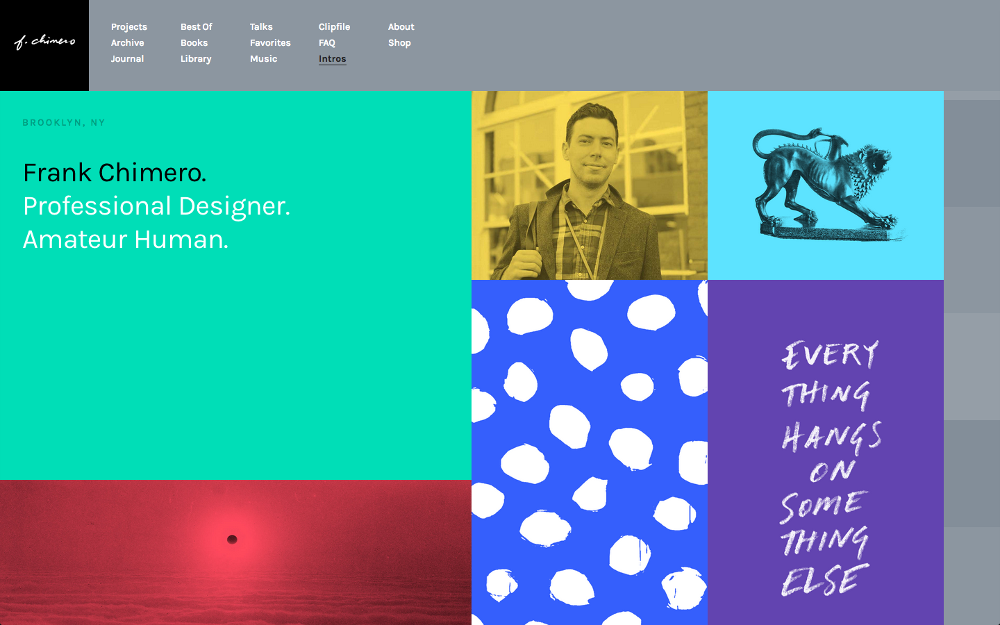
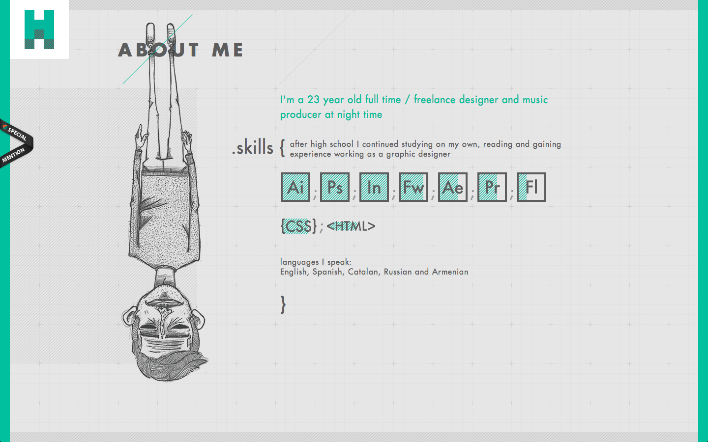
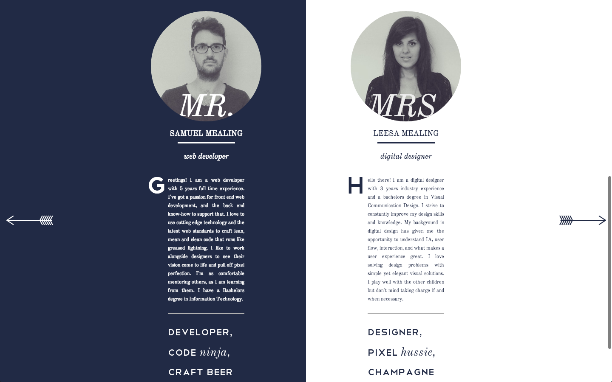
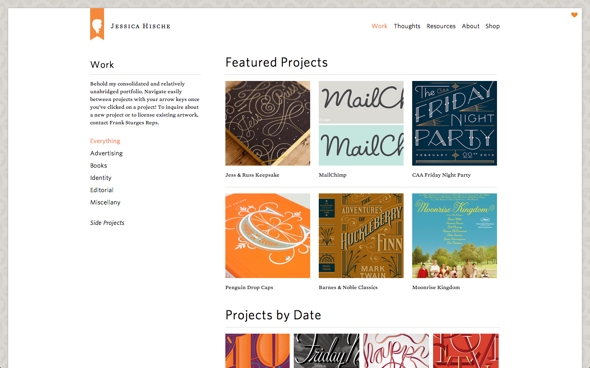

Lesson 10
Portfolios
Weekly Links
Questions to Ask
Who are you?
Your portfolio should reflect your personality. Have a short bio about who you are and what you do. Don't write an essay. No one will read it. Usually, designers put a one-line description of themselves in the introduction and have a shorter bio in a different section. Frank Chimero describes himself as a "Professional Designer. Amateur Human." Having a photo or illustration of yourself also helps.
  What have you done?
It's important to curate your work carefully. Don't showcase projects you did 2 years ago. Make sure your portfolio is up-to-date. Choose 3-5 projects that best represent you! For each one, outline a case study of what you did. A case study should contain the following.
Here are some examples of Case Studies
Most portfolios focus on visual presentation and stark imagery. If you design a logo, make sure to show it in use. Showing your designs in context is crucial to designing a good portfolio. Most of the portfolios have photos be the majority of their portfolio
What do you want to do?
Feature the work you want to do in the future. If you want more projects centered around typography, showcase your typography projects first. Jessica Hische's portfolio has a "featured" section and a "all work" section.
